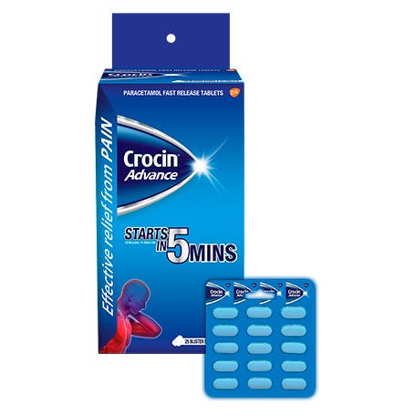

Crocin 500
Crocin 500 MG Tablet, classified as a mild analgesic, is used to treat fever and is the most commonly used pain reliever. It is used to relieve pain in case of a backache, a headache, arthritis and a toothache. It reduces pain in the body caused due to fever. It is often given to patients who suffer from cancer or have undergone surgery, to help them cope up with the pain. Crocin 500 MG Tablet is normally administered orally or rectally, it is also available for intravenous administration.
Below is the list of medicines, which have the same composition, strength and form as Crocin 500 MG Tablet, and hence can be used as its substitute.
1. Parafast 500 MG Tablet
Cipla Ltd
2. Starmol 500 MG Tablet
Cadila Pharmaceuticals Ltd
3. Lupipara 500 MG Tablet
Lupin Ltd
4. Doliprane 500 MG Tablet
Abbott Healthcare Pvt. Ltd
5.Temfix 500 MG Tablet
Novartis India Ltd